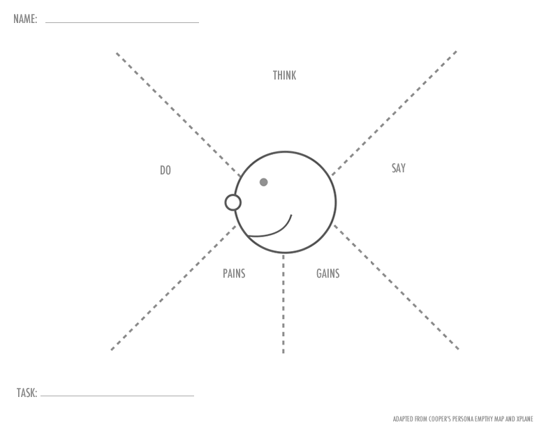

User Research Assignment 1/15/2018

Persona One - Veteran Teacher
Veteran teachers have worked in the district at least 10 years, know the policies "inside and out" and have an established teaching routine. The routine also includes how to interact with students, the classroom environment, and student behaviors prohibited. Students might say: "Don't use your cell phone in (veteran teacher's) class!"
- Name - Steven
- Demographics - 45 year old, African American, Dallas
- Needs and Pain Points - Play music within district policy
- Goals - Use the music to calm students down as the enter the classroom
- Motivation - Wanting to play music before and after class
Persona Two - New Teacher
New Teachers have worked in the district less than 3 years, are unfamilar with all district policy, and are still trying to establish a teaching routine. Since so much of the job is unknown or new, this teacher adhears to district policy that she/he knows to "follow the rules". Students might say: "(new teacher) is Great! She/he brings snacks for us!"
- Name - Echo
- Demographics - 29 year old, Mexican American, Dallas
- Needs and Pain Points - Play music within district policy but with modern technology
- Goals - Create a welcoming enviorment for students
- Motivation - Wanting to play music before and after class
Perona Validation Through Empathy Maps
Both of the personas were validated using the Empathy Maps (Veteran Teacher, New Teacher). Below is a list of pain points to address:
- Update the site colors -- the colors made it difficult to see the font, and the red theme is distracting
- Find a way to add mor music
- Add buttons on main page to play music
- Make play button a mobile view play music